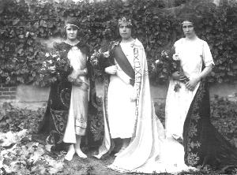
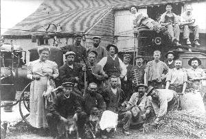
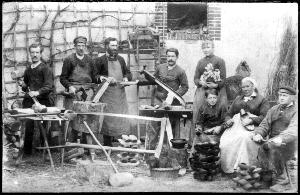
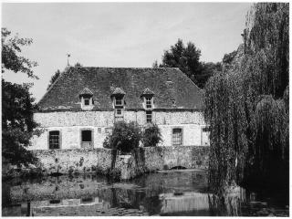

Histoire d'un siècle
L'électricité à CHAUDON:L'inauguration eut lieu le 27 septembre 1925. une grande fête fut organisée où tous, jeunes et vieux, participèrent. Défilé de chars, cavalcades, exposition de matériels modernes. . Au cours du bal sous tente, une reine de l'électricité fut élue, mademoiselle Emilienne Marvin, mesdemoiselles Blanche Galerne et Madeleine Dufour étaient ses demoiselles d'honneur. Au banquet, honoré de la présence de monsieur le sous préfet, ce fut monsieur Camille Godard qui prononça les paroles d'usage, monsieur Laurent , maire de l'époque, étant souffrant. Tout de suite, la fée électricité
apporta son pouvoir magique: les rues et les cours furent éclairées, de 1955 à 1966, l'éolienne expérimentale à grande puissance de Nogent-Le-Roi. http://eolienne.cavey.org/ L'eau à CHAUDON:Tout le monde avait un puits. Les plus aisés avaient une pompe, soit dehors, soit à l'intérieur, mais l'eau était plus ou moins potable.L'eau sous pression fut installée en 1961/1962, ce qui amena une transformation dans toutes les maisons et une sécurité accrue pour tout le monde.Ce fut notamment important pour le corps des sapeurs-pompiers qui à l'époque n'avait que deux pompes à bras, une aspirante et refoulante, l'autre refoulante seulement et des seaux en toile.
|

|
|
 |
Le travail à CHAUDON: Le travail de la
population chaudonnaise dépendait principalement
de la culture. L'embauche se faisait
une ou deux fois l'an à la louée
de st Martin ou st Jean. Avant la première
guerre, Les moissons commençaient beaucoup plus tôt qu'aujourd' hui; Les bottes étaient dressées par tas de 9, appelés des diziaux; les grains finissaient de mûrir en attendant d'être charriés et rentrés dans les granges, ou mis en tas qu'ont appelaient des meules. Sitôt les premières céréales rentrées, les entrepreneurs de battage allaient de ferme en ferme pour débuter par une journée ou deux avec leurs locomobiles chauffées au charbon au degré de chaleur voulu, on entendait le coup de sifflet et les gars de batterie prenaient leurs postes: deux sur le tas à battre, deux engraineurs, trois ou quatre à faire les bottes de paille, deux au "menu", deux pour les sacs de grains, et un à la menu paille. |
|
Il y avait à Chaudon des artisans qui, naturellement, étaient plus ou moins tributaires de l'agriculture. Rue de la cave, c'était le père Louis. On connaissait à peine son nom, soi-disant qu'il était Belge... tout ce qui était en bois, c'était son affaire; Il travaillait pour subsister et non par appât du gain. C'était un bon vieux, il fut le maître de Camille Godard. Ce dernier travaillait lui aussi artistement le bois: manches pour toutes sortes d'outils, pelles, pioches, râteaux, javeliers, tonneaux, cuviers. Il exposait dans les foires et les comices agricoles ses tonnelets cerclés de cuivre. Il était aussi tourneur sur bois. Avant que la force électrique n'arrive, son tour était actionné au pied, à l'aide d'une pédale. C'était un brave homme, simple, qui fut adjoint pendant 43 ans et connu partout pour son dynamisme et sa clairvoyance administrative. Depuis très longtemps, on fabriquait des sabots à Chaudon. Le bois employé était surtout de l'aulne, du noyer également. Deux ouvriers sabotiers, dont le maître était Monsieur Berteaux, avaient leur atelier place de la croix. Monsieur Robert Prunier était lui aussi sabotier; Il avait appris le métier chez le père Louis et chez un sabotier de Villiers-le-Morhier. A la fin du siècle dernier et au début du nôtre, l'entreprise de maçonnerie Bigard Frères était très réputée. Ils avaient en pleine saison une quinzaines d'ouvriers et pouvaient se permettre de maçonner tous les styles, anciens et nouveaux.Si l'ouverture de la boulangerie ne date que de mai 1949 grâce à l'insistance du maire de l'époque auprès de la préfecture, en revanche, Chaudon ne comptait pas moins de 8 cafés, certains assurant en même temps le commerce de l'alimentation. Quant à la briqueterie de Gilles-Fosses, son premier propriétaire s'appelait Mr Gérin; Puis ce fut MM. Courbarien père et fils qui firent construire un 2éme four circulaire, chauffé au poussier de charbon à distribution automatique. Le premier fonctionnait au bois pour cuire principalement la brique creuse faite avec de la terre de Chaudon mêlée avec de la glaise provenant d'Allemant. Le plein rendement de la briqueterie fut atteint entre les deux guerres: Un embranchement particulier était relié à la ligne de chemin de fer. Il y eut jusqu'à 50 ouvriers avant l'installation des presses électriques. |
 |
|
 Le moulin de Mormoulins
pouvait autrefois fabriquer de la farine panifiable. |
|
Chaudon aussi a
bien changé! En 1925, il n'y avait
pas de nom de rues, ni de numéros,
les trottoirs, c'étaient les talus
herbus au pied des maisons, il avaient leur
utilité pour circuler en cas d'inondation.
|